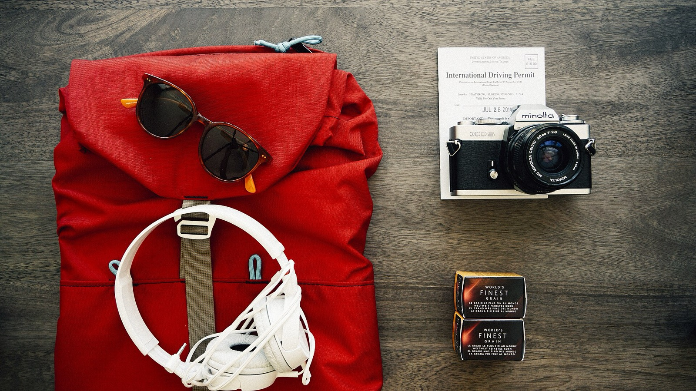
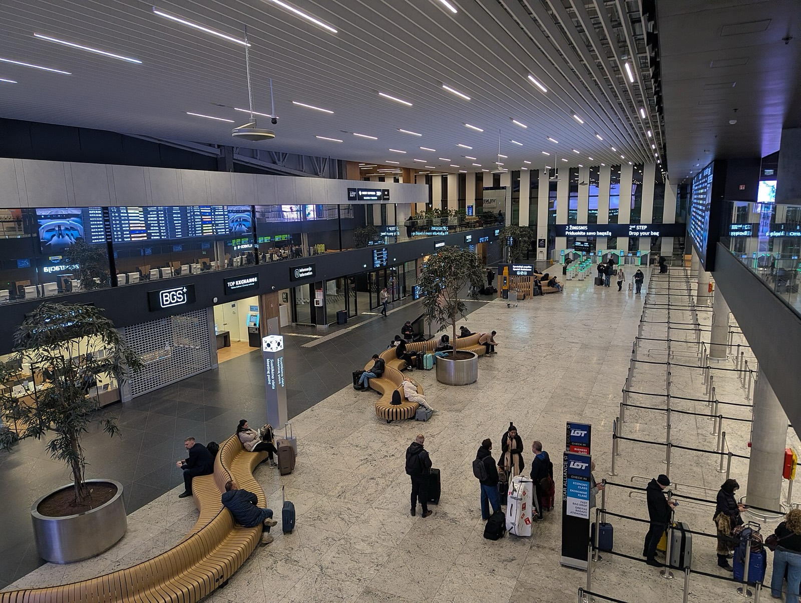

Au jour 6, chaque kilo se compte.
Le test qui te dit en 3 minutes si ton sac est le bon, avant d'arriver à l'aéroport.

Un sac, un appareil photo, des papiers : l'essentiel d'un départDix jours tiennent dans quarante litres.
À une condition : t'interdire le « au cas où ». Un sac plein se porte une heure ; un sac trop grand se remplit tout seul.
Le volume se décide avant de poser quoi que ce soit sur le lit : choisis le sac d'abord, remplis-le ensuite, jamais l'inverse.
Contenu d'exemple : les chiffres sont indicatifs.
Le poids à vide compte autant que le contenu : une valise rigide pèse déjà près de trois fois un sac cabine, avant d'avoir mis la moindre chaussette.
Retiens surtout l'écart entre vide et plein : c'est lui que ton dos sentira.
| Sac | Vide | Plein |
|---|---|---|
| Cabine | 1,1 kg | 8 kg |
| Sac à dos 40 L | 1,4 kg | 11 kg |
| Valise rigide | 3,2 kg | 18 kg |
Au jour 1, dans le hall de départs, ton sac te paraît léger. Au jour 6, sur le sentier, chaque kilo se compte.
C'est le même sac. Ce qui a changé, c'est le temps que tu passes à le porter.

Jour 1 · l'aéroport Jour 6 · le sentier
Jour 6 · le sentierAu jour 6, chaque kilo se compte.
Trois erreurs qu'on refait à chaque départ.
Elles ont toutes la même cause : on prépare son sac comme pour le premier jour.
 Une valise ouverte en cours de préparation
Une valise ouverte en cours de préparation1. Trop de chaussures. Deux paires suffisent : celle qui marche, celle qui se montre.
2. Pas de poche accessible. Passeport et chargeur doivent se prendre sans tout ouvrir.
3. Le sac neuf le jour J. Un sac se règle avant, pas dans la file d'embarquement.
Quelle est la bonne règle ?
Clothes-travel-voyage-backpack — www.Pixel.la Free Stock Photos — CC0
Mountain hiker (Unsplash) — Sujitkun Khantayana parkkun — CC0
Packing for a business trip (Unsplash) — Angelina Litvin — CC0
Vilnius airport departures hall — Sdkb — CC BY-SA 4.0
Hiker in the Mountains — GlacierNPS — Public domain